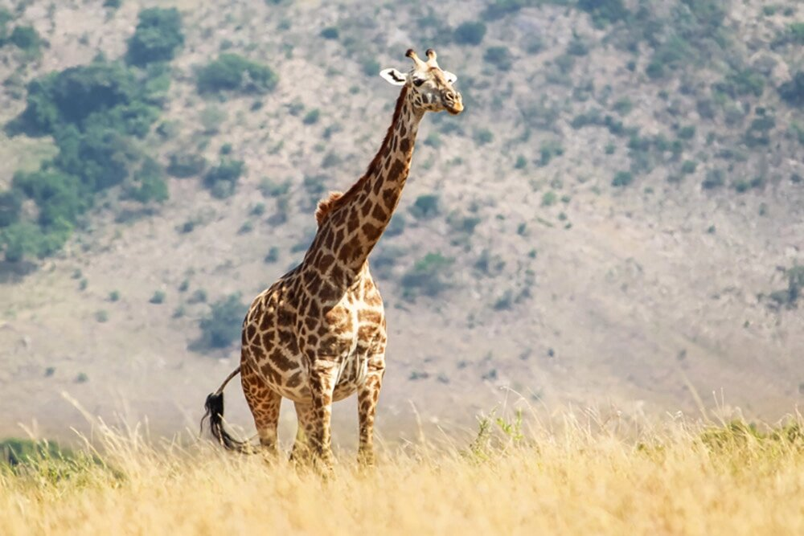
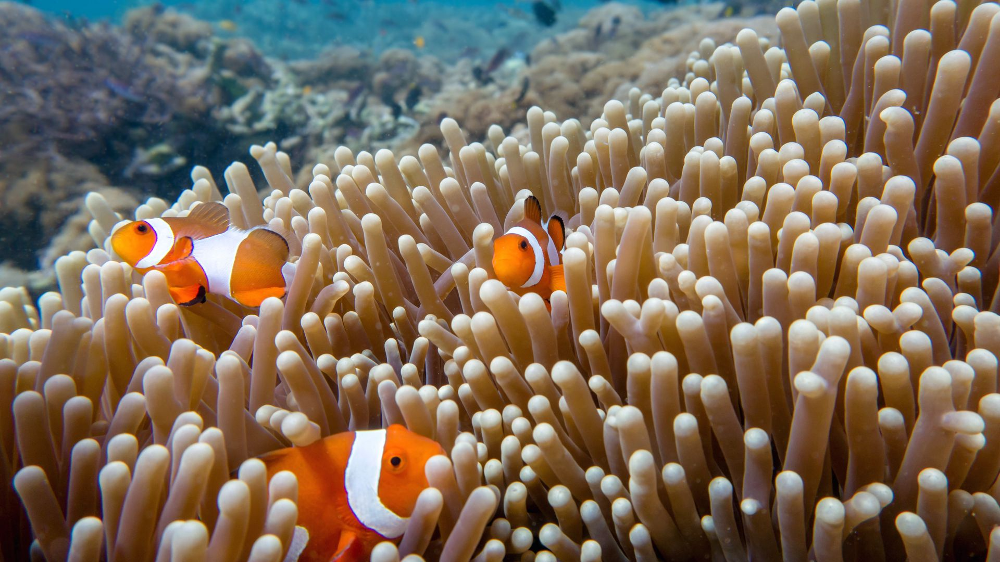

УДИВИТЕЛЬНЫЕ ЖИВОТНЫЕ
Жираф
Туловище короткое, спина покатая, передние ноги длиннее задних. Длинная шея состоит из 7 позвонков (как и у других млекопитающих), голова маленькая.
Узнать больше
Панда
Тело массивное, покрыто густым белым мехом с чёрными пятнами вокруг глаз («очками»), чёрными ушами и лапами.
Узнать большеРыбы
Рыбы (лат. Pisces) — обширная группа водных челюстноротых позвоночных животных, ранее считавшаяся надклассом. Рыбы характеризуются жаберным дыханием на всех этапах постэмбрионального развития организма.
Узнать большеЖираф — самое высокое животное на Земле: взрослые самцы могут достигать в высоту до 5,8 метров, а самки — до 4,6 метров. Такой рост помогает жирафам дотягиваться до листьев на верхушках деревьев, где не могут достать другие животные.
У жирафов очень длинная шея: она составляет около одной трети от общей длины тела. Благодаря длинной шее жирафы могут видеть далеко по горизонту и быстро замечать опасность.
Пятна на шкуре каждого жирафа уникальны, как отпечатки пальцев у человека. Эта особенность позволяет учёным идентифицировать отдельных особей в дикой природе и отслеживать их перемещения.
Необычное строение передних лап: помимо пяти основных пальцев, есть шестой, напоминающий большой палец. Это помогает крепко удерживать и перехватывать бамбуковые стебли. Шестой палец формируется из видоизменённой кости запястья. Панды активны в любое время суток, даже ночью, при этом всё делают очень медленно, чтобы экономить энергию. Основу рациона составляет бамбук — более чем на 99%. В осенний период панды употребляют в пищу листья бамбука, в летний — переходят на его питательные молодые побеги.
Зрение рыб адаптировано под воду: глаза имеют шаровидный хрусталик, что подходит для фокусировки в плотной водной среде. Большинство рыб видят в цвете, а некоторые, особенно живущие у поверхности, способны различать ультрафиолетовый спектр, что помогает им видеть планктон. Рыбы могут образовывать стаи, содержащие миллионы особей. Они используют свои глаза и рецепторы боковой линии, чтобы удерживать своё место в стае.